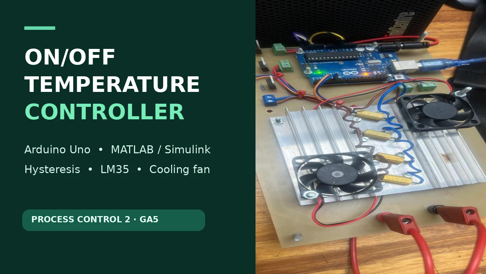

<div style="max-width:650px;margin-top:20px"><a href="projects/process-control-temperature-controller/index.html" style="text-decoration:none;color:inherit"><article class="card" style="padding:0;overflow:hidden;height:100%"><div style="padding:21px"><div class="eyebrow">Process Control 2 · Arduino · MATLAB / Simulink · 2026</div><h3 style="margin:8px 0;font-size:23px">Arduino ON/OFF Temperature Controller</h3><p>Closed-loop temperature regulation with an LM35 sensor, hysteresis and fan output. View original lab evidence and try a browser-based teaching demonstration.</p><p style="margin-top:12px;font-weight:800;color:#138466">View project →</p></div></article></a></div>